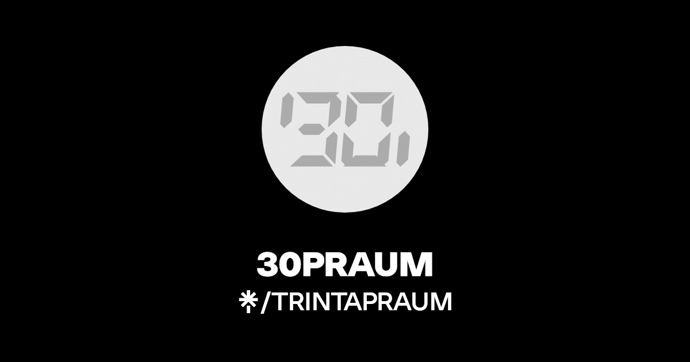

Sobre a Gravadora
A 30PRAUM foi fundada em 2016 como selo fonográfico e produtora musical para gerenciar a carreira do rapper Matuê. Além dele, os cantores WIU e Teto e o contratado atualmente Brandão também integram o casting da produtora, que tem como objetivo fomentar a cena do rap e trap no Nordeste.
Álbuns por Artista
- Matue: Máquina do Tempo (2020), 333 (2024)
- Wiu: Manual de Como Amar Errado (2022), Vagabundo de luxo (2024), 808 Club (2025)
- Teto: MAIOR QUE O TEMPO (2025)
- Brandão: Zoo (2022 pela Hash Produçoes), CEO (2024)
EPs feito pelos artistas
- Matue: Sabor Overdose no Yakisoba (2024), Lançado de surpresa para encerrar seu contrato com a Sony Music, o EP possui três faixas, incluindo "Reza do Milhão", que critica a indústria musical. Foi um passo para sua independência artística antes do álbum 333.
- Wiu: Um Pequeno Álbum de Natal (2023), Projeto temático com sonoridade mais leve, lançado próximo ao Natal.
- Teto: Prévias.zip (2021), Compilação de músicas que viralizaram como prévias nas redes sociais, marcando sua entrada oficial no cenário do trap. E tempo.zip (2025), Reunião de faixas antigas que ganharam versões oficiais.
- Brandão: Unfinish Mixtape (2019), Projeto inicial de Brandão, lançado de forma independente.
